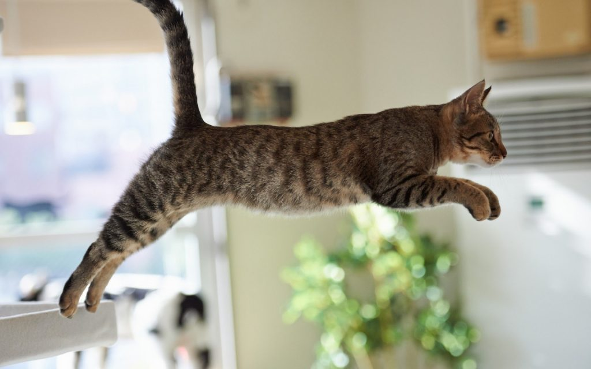

O salto de um gato pode ter até 5 vezes a sua altura
Aparentemente, nossos bichanos favoritos tem verdadeiras
molas no lugar das patas, não é mesmo? O recorde mundial de pulo mais alto foi dado por um gato chamado Nyah-Suke, que vive no Japão,
e conseguiu atingir uma altura de 1,96m de altura em seus pulos.